CakeAsyncIO
CakeAsyncIO Overview
CakeIO offers asynchronous versions of its core IO functions. The usage of these asynchronous functions is similar to the synchronous functions, but with a few changes. This documentation will not exhaustively cover each function, since the functions behave identically to their synchronous counterparts, with the exception that they are executed in an asynchronous context. Instead, this documentation will focus on the differences between the synchronous / asynchronous interfaces and provide a few examples involving them. Finally, there are a few special interfaces unique to CakeAsyncIO which will be covered.
Warning
This library and its documentation require a firm understanding of CakeIO fundamentals and its core objects.
Blueprint Differences
Blueprint cannot safely support all asynchronous interfaces offered by CakeAsyncIO. This may change in the future, but for now the following asynchronous interfaces are not available in Blueprint: 1. Directory Traversal 1. CakeMix GatherCustom functions 1. CakeAsyncIO Batch Operations
The C++ interfaces for asynchronous IO are contained within the CakeAsyncIO namespace.
Note
All CakeAsyncIO interfaces can be found in the following header:
It is important to understand that CakeAsyncIO is not meant to be the single solution for any asynchronous code involving CakeIO objects and interfaces. This is a key difference between the C++ and Blueprint APIs for CakeAsyncIO. Blueprint offers much less options to its users for asynchronous interactions, whereas asynchronous code in C++ is complicated since Unreal Engine offers many different approaches for asynchronous execution. Being a general purpose API it cannot meet every requirement for every user, especially given the amount of approaches that can be used. Developing your own implementation often can be the correct solution, giving you more control over error handling, performance, and other characteristics. Using the core CakeIO objects and interfaces in an asynchronous context is quite straightforward since the objects are lightweight and easy to pass by value. The source code for CakeAsyncIO can also be viewed as a reference point when developing your own implementations.
CakeIO provides async functionality in the form of latent Blueprint nodes. Using these nodes follows the same rules as using any latent Blueprint node -- we can only use these nodes in event graphs:
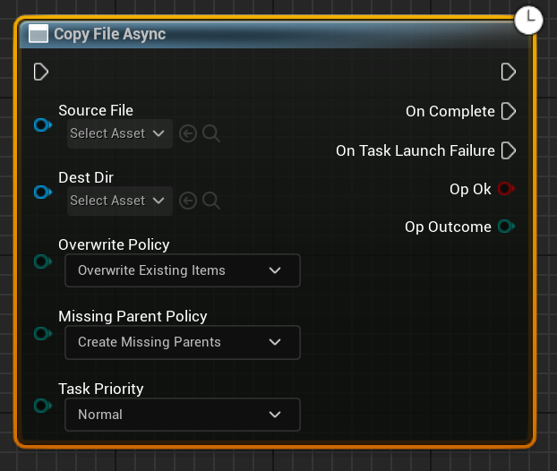
The keyword "CakeAsyncIO" in an context window will show us every async function available to us:
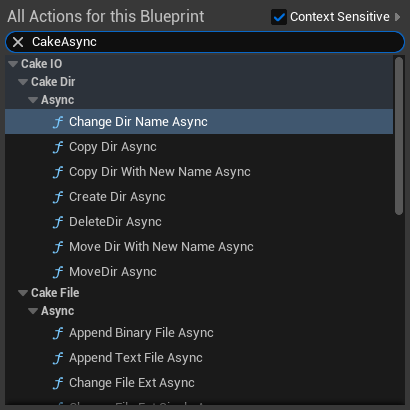
A more precise way to filter is to drag off a node of a relevant Cake object, such as a CakeFile, and then type "Async" to find all the async nodes related to CakeFile:
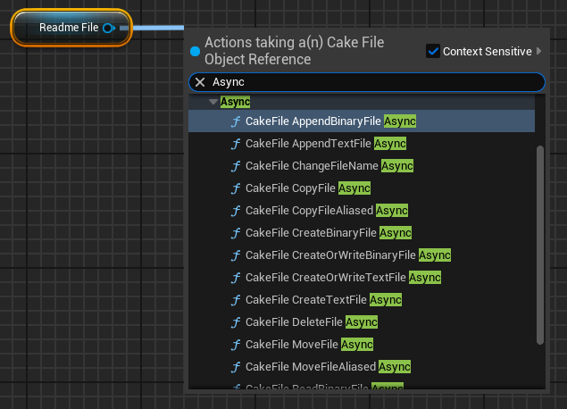
AsyncIO Key Differences
While much of the usage between synchronous and asynchronous interfaces remains the same, there are some key differences to be aware of. As mentioned earlier, all IO operations from CakeFiles, CakeDirs, and the CakeMixLibrary have asynchronous versions, including directory traversal.
One key difference that remains true in either C++ or Blueprint is that if the operation includes a callback used during the operation, then that callback is being called from a thread that is different from the game thread. It is critical to understand this in order to avoid subtle (or not so subtle) errors. Thus, if we were to use an asynchronous traversal function, it would not be safe to update something on the game thread (like a Slate Widget) during that callback.
Async Function Return Type
All Async functions return an FCakeAsyncTask, which is just a minimal type wrapper that contains the Unreal TTask type utilized by the async framework:
struct CAKEIO_API FCakeAsyncTask
{
UE::Tasks::TTask<void> Task{};
FORCEINLINE operator bool() { return Task.IsValid(); }
};
Sometimes callers might want to cache the Task so that they can wait on the results, but in the event that you only want to check and ensure the Task was launched successfully, we just need to ensure that the inner Task.IsValid() returns true. Operator bool has been defined to return this to allow for ergonomic code forms like:
if (!CakeAsyncIO::SomeAsyncFunction())
{ UE_LOG(LogTemp, Error, TEXT("Some function failed to launch!")); }
Note
TTask is defined in Tasks/Task.h
Async Function Signatures
The signatures for a given async IO operation have a regular pattern that we can expect. As mentioned earlier, all functions return FCakeAsyncTasks. Any result information that the IO operation returns in the synchronous form will be supplied in the async specific result callback, which is called when the async operation has concluded.
The parameter lists will follow a standard pattern: if there is a target object, the target object is the first parameter, followed by all non-optional parameters used by that IO function. The last non-optional parameter will always be the result callback, which is called when the async operation has concluded. Generally this callback will also pass back the results of the operation, which will vary in type based upon the operation being used. Next, the first optional parameter in an asynchronous function signature will be an FCakeSettingsAsyncTask. We can use this to customize the behavior of the asynchronous operation. Finally, if there are any remaining optional parameters that the IO operation takes, they will follow the task settings struct.
Let's look at an example by comparing CakeDir's CreateDir signature versus the CakeAsyncIO CreateDir signature:
[[nodiscard]] FCakeAsyncTask CreateDir(
FCakeDir SourceDir,
FCakeAsyncDirOpCb CallbackResult,
FCakeSettingsAsyncTask TaskSettings = {},
ECakePolicyMissingParents MissingParents = CakePolicies::MissingParentsDefault
);
[[nodiscard]] FCakeResultDirIO CreateDir(
ECakePolicyMissingParents MissingParentPolicy = CakePolicies::MissingParentsDefault
) const;
Let's compare the differences of the parameter lists. Since CreateDir is a member function on an FCakeDir object, the async variant needs the object it should call CreateDir on as the first parameter. Secondly, we need to provide a result callback, which is a delegate that will receive the FCakeResultDirIO returned from the CreateDir operation.
Let's try calling both the synchronous and asynchronous versions using the same FCakeDir object. For this example, we will assume that the default values for all optional parameters are acceptable.
FCakeDir GameDir{ FCakePath{TEXTVIEW("X:/cake-arena")} };
auto ReportCreateDirResult = [](FCakeResultDirIO DirResult)
{
UE_LOG(LogTemp, Warning,
TEXT("CreateDir Result: [%s]"), *DirResult.ToString());
};
if (!CakeAsyncIO::Dir::CreateDir(
GameDir,
FCakeAsyncDirOpCb::CreateLambda(ReportCreateDirResult)))
{
UE_LOG(LogTemp, Warning,
TEXT("AsyncCreateDir failed to launch!"));
}
ReportCreateDirResult(GameDir.CreateDir());
As this example shows, even in the simplest scenario calling the asynchronous version of an IO operation requires more complex code.
Maybe remove? A bit prescriptive.
Tip
In general, only use asynchronous code when context truly requires it. The advantages provided by asynchronous code should be proven to be worth the cost. If you can afford to get away with the synchronous version, do so! Especially in situations where minor stalls aren't an issue, like with an in-house editor tool.
Task Priority
Every CakeIO async node has a Task Priority parameter. This is an ECakeTaskPriority, which is an enum that partially mirrors a native Unreal enum:
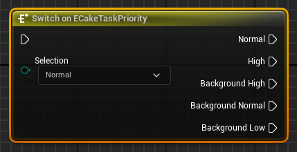
This priority helps the Unreal Task system scheduler select when the task should be run. In many situations, you probably won't have to change this from the default value of Normal. If you have a task that isn't a high priority, you can use one of the Background settings to defer the task to a lower priority. Again, use profiling to help inform and guide your decisions about which priority works best for your situation.
The priority order from highest to lowest is as follows: 1. High 1. Normal 1. Background High 1. Background Normal 1. Background Low
Failure to Launch
Every async node can fail to properly launch its async task due to some form of invalid arguments. Usually this occurs when a user sends in an invalid reference or forgets to submit a valid callback. When an async node fails to launch, the OnTaskLaunchFailure path will be taken. Assuming the task launches successfully, the associated Complete path will be taken when the async operation resolves:
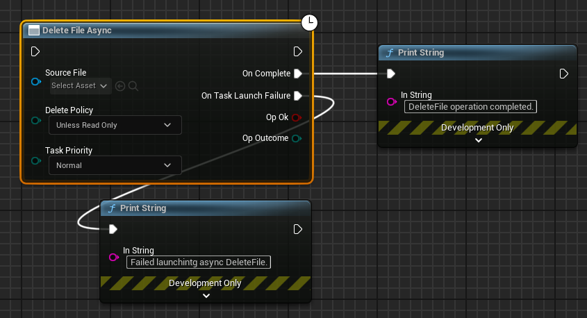
Tip
If you have CakeIO Log enabled, you will get a warning that contains the context regarding why the task launch failed.
Callbacks Invoked Outside the Game Thread
Certain operations do involve invoking user supplied callbacks on another thread. This means that if you are not careful, you can create data races and crashes by accessing the game thread from another thread.
In general, be extremely careful before deciding to use these nodes. Prefer C++ to Blueprint if you can, since you have much greater control over memory and threads. However, these nodes were still included, because they can still provide an ergonomic utility, especially in non-production environments such as ad-hoc editor tooling.
The following operations invoke callbacks on a thread different from the game thread:
- Any Batch Operation action callback.
- Any Directory Traversal operation's callback.
- Any GatherCustom predicate callbacks.
If you use any of these async nodes, you must be extremely careful not to alter anything in the game thread or access game thread specific functionality. Always minimize or better yet eliminate dependencies in the callback that rely on the game thread. While you can technically make some changes to game thread oriented memory, it is often not worth the risk of data races.
A safe example of a traversal callback is one that is performing some IO operation on each element that is visited, such as copying files to another directory. As long as this callback doesn't call into some game-thread specific function, such as updating a Slate Widget, then the callback is generally safe to use.
However, if we were trying to gather files into some container, this would be dangerous, since the container we would be using would potentially be visible to other entities. Assuming the container was completely private and we could guarantee the object itself would not modify or access the container during the async traversal, this would technically be safe, but such guarantees can be hard to prove and even harder to maintain, especially in Blueprint. In this particular scenario, it would be much better to use a Gather or GatherCustom async operation, which would handle the dangerous details for us, only passing a valid container back to us safely after the async operation had fully resolved.
Tip
You can accomplish many things with GatherCustom operation -> Batch operation chain instead of relying on the more dangerous custom traversals. Before you reach for a custom traversal, check and see if you can accomplish the same functionality via GatherCustom and a Batch operation instead. It is much easier to write a thread-safe GatherCustom predicate.
Async Examples
File IO
Let's examine async File IO using the async version of CakeFile's DeleteFile. Since we are using the asynchronous function which is not a member function, we need to pass the CakeFile object as the first argument to the async version.
The namespace CakeAsyncIO::File contains asynchronous versions of all the FCakeFile IO Operations.
The result delegate callback signature for file IO requires one parameter: an FCakeResultFileIO that the IO operation returned.
FCakeFile FileItemsDb{ FCakePath{TEXTVIEW("X:/cake-arena/items/items.db")} };
auto ReportDetails = [](FCakeResultFileIO DeleteResult)
{
UE_LOG(LogTemp, Warning, TEXT("Result of the file deletion operation: [%s]"),
*DeleteResult.ToString())
};
if (!CakeAsyncIO::File::DeleteFile(
FileItemsDb,
FCakeAsyncFileIOCb::CreateLambda(ReportDetails)))
{
UE_LOG(LogTemp, Warning,
TEXT("AsyncCreateDir failed to launch!"));
}
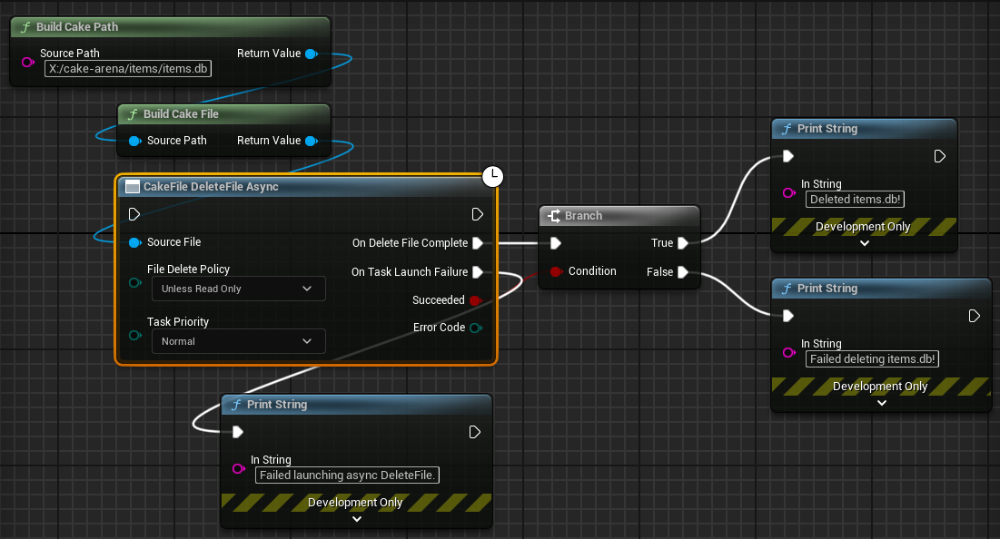
Reading File Data
The interfaces for reading a file's data change slightly in their async version.
To keep lifetime management simple, the ReadXxxToBuffer interfaces are not supported. Only the ReadXxx interfaces, which return TCakeOrderFile types are supported.
DECLARE_DELEGATE_OneParam(FCakeAsyncDoneFileReadText, TCakeOrderFile<FString> TextData);
DECLARE_DELEGATE_OneParam(FCakeAsyncDoneFileReadBinary, TCakeOrderFile<TArray<uint8>> BinaryData);
And an example using ReadTextFile:
FCakeFile FileReadme{ FCakePath{TEXTVIEW("X:/cake-arena/readme.txt")} };
auto OnReadTextComplete = [](TCakeOrderFile<FString> Order) -> void
{
if (Order)
{
UE_LOG(LogTemp, Warning, TEXT("Readme file data: [%s]"),
*Order.Payload);
}
};
CakeAsyncIO::File::ReadTextFile(
FileReadme,
FCakeAsyncDoneFileReadText::CreateLambda(OnReadTextComplete)
);
File IO
Directory IO
In this example, we'll use an async version of DeleteDir to delete the directory our CakeDir object references.
The namespace CakeAsyncIO::Dir contains asynchronous versions of all the FCakeDir IO Operations.
The result delegate callback signature for directory IO requires one parameter: an FCakeResultDirIO that the IO operation returned.
Here's an example using the asynchronous version of DeleteDir.
FCakeDir DirItems{ FCakePath{TEXTVIEW("X:/cake-arena/items")} };
auto OnDeleteDirComplete = [](FCakeResultDirIO DeleteResult) -> void
{
if (DeleteResult)
{
UE_LOG(LogTemp, Error, TEXT("The directory was successfully deleted!"));
}
else
{
UE_LOG(LogTemp, Error, TEXT("Failed deleting directory: [%s]"),
*DeleteResult.ToString())
}
};
if (!CakeAsyncIO::Dir::DeleteDir(
DirItems,
FCakeAsyncDirIOCb::CreateLambda(OnDeleteDirComplete)))
{
UE_LOG(LogTemp, Warning,
TEXT("AsyncCreateDir failed to launch!"));
}
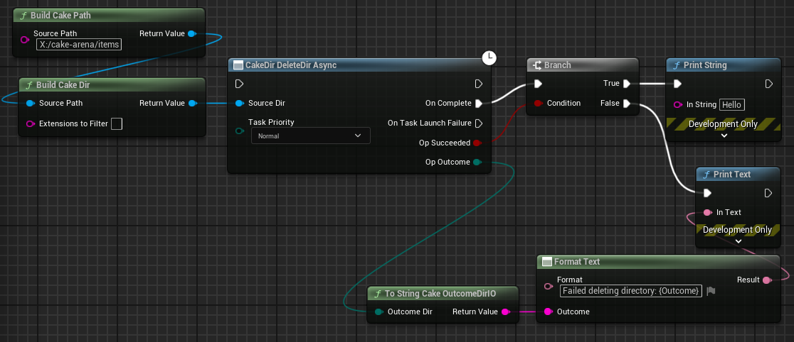
File / Directory IO Pitfalls
It is critical to note that all parameters in CakeAsyncIO interfaces are passed by value, including the source object. This is to eliminate many potential lifetime problems. However, this has important implications in IO operations that change the path information on file or directory objects. Normally, when a move or change name operation (e.g., MoveFile or ChangeDirName) succeeds, the associated object automatically updates its path information. However, since this object is passed by value in asynchronous contexts, this means that your source object will not have updated itself to reflect the changes. Therefore, if you plan on using an object after an async move / change name operation, you must update the path information manually.
In the example below, we use the standard member function in a synchronous context. This means that, assuming the move succeeds, our file object will already have updated its path information to reflect its new location:
FCakeFile FileItemsDb{ FCakePath{TEXTVIEW("X:/cake-arena/items/items.db")} };
FCakePath DestDir{ TEXTVIEW("Y:/cake-archive/items/") };
if (FileItemsDb.MoveFile(DestDir))
{
UE_LOG(LogTemp, Error, TEXT("New file path is: [%s]"),
*FileItemsDb.GetPathString());
}
else
{
UE_LOG(LogTemp, Error, TEXT("Failed moving file."))
}
In the asynchronous version, if we wanted to use the new location, we'd have to first manually create it ourselves:
FCakeFile FileItemsDb{ FCakePath{TEXTVIEW("X:/cake-arena/items/items.db")} };
FCakePath DestDir{ TEXTVIEW("Y:/cake-archive/items/") };
auto OnAsyncMoveComplete = [FileItemsDb, DestDir](FCakeResultFileIO MoveResult) mutable -> void
{
if (MoveResult)
{
FCakePath NewPath{ FileItemsDb.GetPath().CloneWithNewParent(DestDir) };
FileItemsDb.SetPath(NewPath);
UE_LOG(LogTemp, Error, TEXT("New file path is: [%s]"),
*FileItemsDb.GetPathString());
}
else
{
UE_LOG(LogTemp, Error, TEXT("Failed moving file: [%s]"),
*MoveResult.ToString())
}
};
if (!CakeAsyncIO::File::DeleteFile(
FileItemsDb,
FCakeAsyncDoneFileIO::CreateLambda(OnAsyncMoveComplete)))
{
UE_LOG(LogTemp, Warning,
TEXT("AsyncCreateDir failed to launch!"));
}
File / Dir Pitfalls
Directory Traversal
Asynchronous directory traversal is quite similar to synchronous traversal, but we must be extremely conscious of the fact that our traversal callback is being invoked from a different thread. This means that all sorts of wonderful thread-related nightmares can befall upon us, so we must be vigilant when we choose to use this asynchronous traversal.
Since our traversal callback is being called on a different thread, we must be very careful regarding what sort of data we might mutate. If we are doing things like adding data to a collection, it is the caller's burden to ensure that everything is handled in a thread-safe manner. Whenever possible, favor interfaces like CakeMixLibrary's Gather or GatherCustom, which will build an isolated container during the asynchronous operation and then pass it back to be safely used after.
We'll finish here by looking at two examples, one unguarded traversal and one search traversal. The callbacks are extremely simple, and the main focus here is to show that the asynchronous interface is extremely similar to the synchronous interface.
Our unguarded traversal will simply print the directory names it encounters, and our search traversal will look for a readme file and stop immediately once the first file that matches our criteria is found.
All async traversal operations are contained in namespace CakeAsyncIO::Dir.
As with our File / Directory IO result callbacks, traversal callbacks just require one parameter, which is the associated result type for that traversal style. This means FCakeResultTraversal for unguarded / guarded traversals, and FCakeResultSearch for search traversals:
DECLARE_DELEGATE_OneParam(FCakeAsyncDoneTraversal, FCakeResultTraversal TraversalResult);
DECLARE_DELEGATE_OneParam(FCakeAsyncDoneSearch, FCakeResultSearch SearchResult);
FCakeDir DirItems{ FCakePath{TEXTVIEW("X:/cake-arena/items")} };
auto OnTraversalComplete = [](FCakeResultTraversal ResultTraversal) -> void
{
UE_LOG(LogTemp, Warning, TEXT("Traversal Result: [%s]"), *ResultTraversal.ToString());
};
auto OnSearchComplete = [](FCakeResultSearch ResultSearch) -> void
{
UE_LOG(LogTemp, Warning, TEXT("Search Result: [%s]"), *ResultSearch.ToString());
};
CakeAsyncIO::Dir::TraverseSubdirs(
DirItems, ECakePolicyOpDepth::Deep,
[](FCakeDir NextDir) -> void {
UE_LOG(LogTemp, Warning, TEXT("Found subdir: [%s]"), *NextDir.CloneDirName())
},
FCakeAsyncTraversalCb::CreateLambda(OnTraversalComplete)
);
CakeAsyncIO::Dir::TraverseSearchFiles(
DirItems, ECakePolicyOpDepth::Deep,
[](FCakeFile NextFile) -> ECakeSignalSearch {
FString FileName{ NextFile.CloneFileName() };
if (FileName.Contains(TEXT("readme")))
{
UE_LOG(LogTemp, Warning, TEXT("Readme File found at: [%s]"),
*NextFile.GetPathString());
return ECakeSignalSearch::Success;
}
return ECakeSignalSearch::Continue;
},
FCakeAsyncSearchCb::CreateLambda(OnSearchComplete)
);
Here's our async unguarded subdirectory traversal:
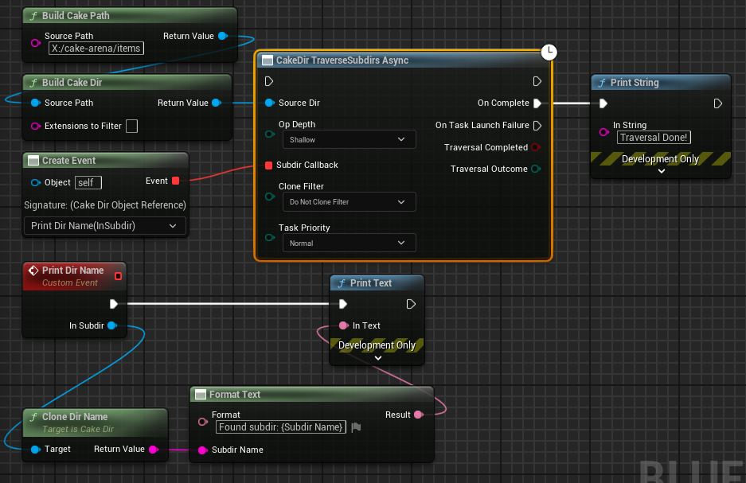
And here is our async search traversal:
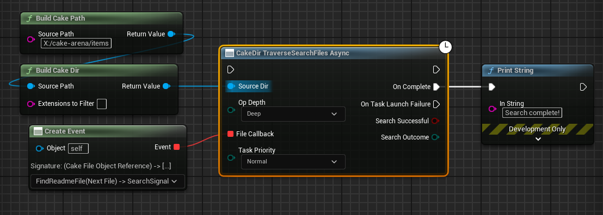
For completeness, included is the simple and nearly useless search callback definition:
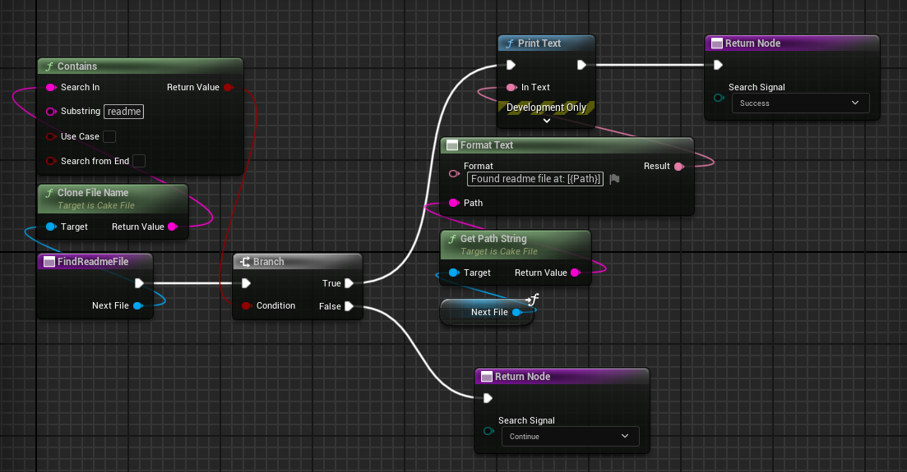
CakeMixLibrary
CakeAsyncIO provides asynchronous versions of all of the CakeMixLibrary IO functions.
CakeAsyncIO places all async CakeMixLibrary functions under the namespace CakeAsyncIO::CakeMix. The CakeMixLibrary namespace is mirrored underneath, so if a function is located in CakeMixLibrary::Dir, then the async function is found in CakeAsyncIO::CakeMix::Dir.
The callback signatures will vary from function to function. However, the standard pattern applies: the callback will be sent a single parameter that is the same as the synchronous version's return type. Since, for instance, the CountXxx interfaces return a TCakeOrderDir<int32>, our callback's parameter will need to be of the same type:
FCakeDir DirCakeArena{ FCakePath{TEXTVIEW("X:/cake-arena/")} };
auto OnCountSubdirsComplete = [](TCakeOrderDir<int32> CountOrder) -> void
{
if (CountOrder)
{
UE_LOG(LogTemp, Warning, TEXT("We have [%d] subdirectories in our main directory!"),
CountOrder.Payload);
}
};
CakeAsyncIO::CakeMix::Dir::CountSubdirs(
DirCakeArena, ECakePolicyOpDepth::Deep,
FCakeAsyncDoneOrderDirCount::CreateLambda(OnCountSubdirsComplete)
);
The following is a list of the CakeAsyncIO delegates that are used by the various async CakeMixLibrary functions:
DECLARE_DELEGATE_OneParam(FCakeAsyncDoneBatchMixedIO, FCakeOrderBatchMixedIO BatchResultMixed);
DECLARE_DELEGATE_OneParam(FCakeAsyncDoneGatherFiles, TCakeOrderDir<TArray<FCakeFile>> Result);
DECLARE_DELEGATE_OneParam(FCakeAsyncDoneGatherSubdirs, TCakeOrderDir<TArray<FCakeDir>> Result);
DECLARE_DELEGATE_OneParam(FCakeAsyncDoneGatherCustomFiles, TCakeOrderMixedIO<TArray<FCakeFile>> Result);
DECLARE_DELEGATE_OneParam(FCakeAsyncDoneBatchFile, FCakeOrderBatchFile BatchOrder);
DECLARE_DELEGATE_OneParam(FCakeAsyncDoneBatchDir, FCakeOrderBatchDir BatchOrder);
DECLARE_DELEGATE_OneParam(FCakeAsyncDoneOrderBatchDir, FCakeOrderBatchDir Result);
DECLARE_DELEGATE_OneParam(FCakeAsyncDoneOrderDirCount, TCakeOrderDir<int32> Result);
For full details regarding the CakeMixLibrary and the functions it offers, please see this section.
CakeMixLibrary
Unique Interfaces
Batch Operations
CakeAsyncIO offers interfaces for batch processing, which involves running a callback on an array of objects in an asynchronous context. Batch processing supports CakeFile and CakeDir objects, and it offers two different styles: one style that reports the overall progress of the operation at each step, and one that does not report progress.
Tip
By combining some form of Gather/GatherCustom operation with batch processing, one can achieve a wide variety of complex async IO operations in a simple, ergnomic way.
All batch processing functions are contained in the namespace CakeAsyncIO::BatchProcessing.
We have four functions at our disposal: BatchProcessFiles, BatchProcessDirs, BatchProcessFilesWithProgress, and BatchProcessDirsWithProgress.
Each batch processing function takes an "action" callback, which will receive a CakeFile or CakeDir object and need to return that object's associated result type:
DECLARE_DELEGATE_RetVal_OneParam(FCakeResultFileIO, FCakeAsyncBatchActionFile, FCakeFile NextFile);
DECLARE_DELEGATE_RetVal_OneParam(FCakeResultDirIO, FCakeAsyncBatchActionDir, FCakeDir NextDir);
The done callback will return a batch order for the corresponding CakeIO object:
DECLARE_DELEGATE_OneParam(FCakeAsyncDoneBatchFile, FCakeOrderBatchFile BatchOrder);
DECLARE_DELEGATE_OneParam(FCakeAsyncDoneBatchDir, FCakeOrderBatchDir BatchOrder);
We submit a TArray of our corresponding CakeIO object to the batch processing function, followed by the action callback, and our done callback:
FCakeDir DirCakeArena{ FCakePath{TEXTVIEW("X:/cake-arena/")} };
auto OnBatchProcessComplete = [](FCakeOrderBatchFile BatchOrder) -> void
{
if (BatchOrder)
{
UE_LOG(LogTemp, Warning, TEXT("Successfully processed [%d] file(s)."),
BatchOrder.Payload.GetNumSucceeded());
}
};
auto FileBatchAction = [](FCakeFile NextFile) -> FCakeResultFileIO
{
if (TCakeOrderFile<FString> TextOrder = NextFile.ReadTextFile())
{
UE_LOG(LogTemp, Warning, TEXT("[%s] data: [%s]"), *NextFile.CloneFileName(), **TextOrder);
}
else { return TextOrder.Result; }
return FCakeResultFileIO::Ok();
};
TCakeOrderDir<TArray<FCakeFile>> Files{
CakeMixLibrary::Dir::GatherFiles(DirCakeArena, ECakePolicyOpDepth::Deep)};
if (Files)
{
CakeAsyncIO::BatchProcessing::BatchProcessFiles(
Files.Payload,
FCakeAsyncBatchActionFile::CreateLambda(FileBatchAction),
FCakeAsyncDoneBatchFile::CreateLambda(OnBatchProcessComplete));
}
This function also has the following optional parameters: FCakeSettingsAsyncTask and an ECakePolicyErrorHandling policy, which determines whether or not the batch process should halt when the action returns a error outcome value.
If we want to be informed of the progress of a batch operation, this can be accomplished by using the WithProgress variant of our desired batch process function.
This version adds to parameters to our function call: we need to supply a callback that can receive the progress information, and we need to pass a special enum that determines which thread the progress callback should be called in: EProgressCbThread. This enum is defined directly in the CakeAsyncIO namespace:
enum struct EProgressCbThread : uint8
{
/** Use the thread used by the current async process (NEVER guaranteed to be the game thread). */
AsyncThread,
/** Use the game thread to report progress. */
GameThread,
MAX
};
Using the game thread can dramatically simplify the receiving code, especially if you are using that information to inform GUI changes. However, sending progress reports via the game thread incurs extra overhead -- be sure to profile and inform your final decision on its results.
The progress callback parameter list needs to take the following form: an int32 representing the current element number being processed, an int32 representing the total element count, and a float representing the percent complete the entire operation is:
DECLARE_DELEGATE_ThreeParams(FCakeAsyncBatchProgress, int32 CurrentStep, int32 MaxStep, float PercentComplete);
With a few modifications, we can rework the previous example to incorporate progress reporting:
FCakeDir DirCakeArena{ FCakePath{TEXTVIEW("X:/cake-arena/")} };
auto OnBatchProcessComplete = [](FCakeOrderBatchFile BatchOrder) -> void
{
if (BatchOrder)
{
UE_LOG(LogTemp, Warning, TEXT("Successfully processed [%d] file(s)."),
BatchOrder.Payload.GetNumSucceeded());
}
};
auto BatchProgressHandler = [](int32 CurrentStep, int32 MaxStep, float PercentComplete) -> void
{
UE_LOG(LogTemp, Warning, TEXT("Batch Process: [%d]/[%d] (%2f)"),
CurrentStep, MaxStep, PercentComplete);
};
auto FileBatchAction = [](FCakeFile NextFile) -> FCakeResultFileIO
{
if (TCakeOrderFile<FString> TextOrder = NextFile.ReadTextFile())
{
UE_LOG(LogTemp, Warning, TEXT("[%s] data: [%s]"), *NextFile.CloneFileName(), **TextOrder);
}
else { return TextOrder.Result; }
return FCakeResultFileIO::Ok();
};
TCakeOrderDir<TArray<FCakeFile>> Files{
CakeMixLibrary::Dir::GatherFiles(DirCakeArena, ECakePolicyOpDepth::Deep)};
if (Files)
{
CakeAsyncIO::BatchProcessing::BatchProcessFilesWithProgress(
Files.Payload,
FCakeAsyncBatchActionFile::CreateLambda(FileBatchAction),
FCakeAsyncBatchProgress::CreateLambda(BatchProgressHandler),
CakeAsyncIO::EProgressCbThread::GameThread,
FCakeAsyncDoneBatchFile::CreateLambda(OnBatchProcessComplete));
}
Special Types
CakeAsyncWrap
Note
The following types are used in Blueprint only.
CakeAsyncWrap types are light-weight types that CakeAsyncIO uses to safely and performantly pass data to and from CakeAsync operations. They are very basic types, with an extremely small interface.
All CakeAsyncWrap types have a type indicator in their name as a suffix. This type indicator tells us what the wrapped object is. For a string, our type is CakeAsyncWrapString. Here is a list of the types supported by CakeAsyncWrap:
- String (CakeAsyncWrapString)
- Array of Bytes (CakeAsyncWrapBytes)
- Array of CakeFile objects (CakeAsyncWrapFiles)
- Array of CakeDir objects (CakeAsyncWrapDirs)
Although each of the object's wrapped variable's type and name differs, there are some common interfaces that apply to all of them.
We can build an AsyncWrap version of our target type via BuildCakeAsyncWrap<Type>, where <Type> is the type we want to wrap:
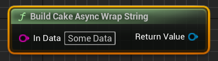
We can get access to the wrapped type via Unwrap:
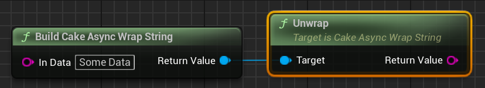
You can also get access to the wrapped type by directly accessing the member variable. The name will be identical to the type that is being wrapped, so for a CakeAsyncWrapString, we can type GetString to get the string that is wrapped by the type:
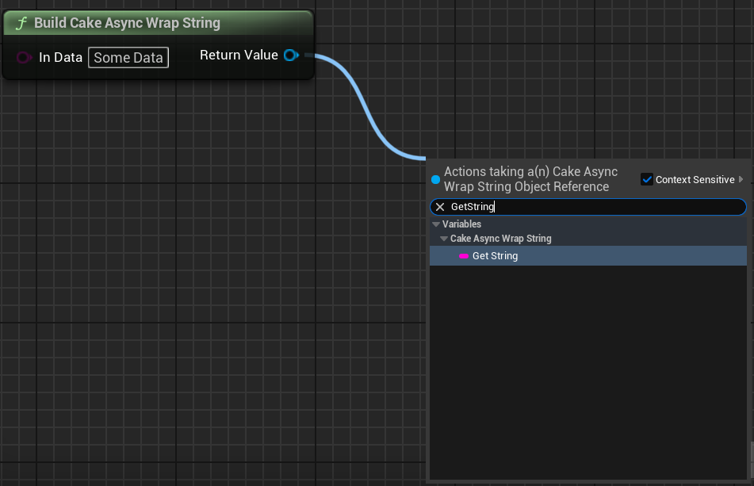
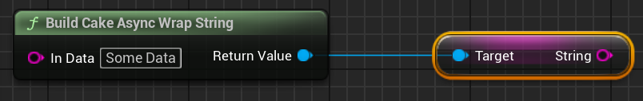
The member variables will be String, Bytes, Files, or Dirs, depending on the CakeAsyncWrap type you are using.